These demonstrations exist to help engineers and security researchers understand, detect, and remediate CBC mode vulnerabilities. Each attack runs against a self-contained, in-page mock oracle with local keys. Every weakness is paired with its authenticated mitigation. Do not point these techniques at any system you do not own or are not explicitly authorized to test.
The mechanism
In CBC mode, plaintext is partitioned into fixed 16-byte blocks (P₁, P₂, ..., Pₙ). The first block is XORed with an Initialization Vector (IV = C₀) before encryption under key K. Each subsequent block is XORed with the preceding ciphertext block before passing through the block cipher:
- Encryption:
Cᵢ = E_K(Pᵢ ⊕ Cᵢ₋₁)fori ≥ 1(whereC₀ = IV) - Decryption:
Pᵢ = D_K(Cᵢ) ⊕ Cᵢ₋₁fori ≥ 1(whereC₀ = IV)
NIST specifies CBC in SP 800-38A §6.2. Decryption operates in reverse: block cipher decryption D_K(Cᵢ) produces an intermediate state Iᵢ, which is XORed with Cᵢ₋₁ to yield Pᵢ. This mathematical relationship is the root of CBC's malleability: changing byte j of Cᵢ₋₁ produces an identical, deterministic change in byte j of Pᵢ.

Three root causes, four attack vectors
The operational failures of CBC mode stem from three distinct root causes, creating four primary attack vectors:
- No ciphertext integrity / Malleability: Because
Pᵢ = D_K(Cᵢ) ⊕ Cᵢ₋₁, an attacker can modify ciphertext bytes to inject chosen changes into decrypted plaintext without triggering decryption errors. - Padding oracle side-channel feedback: Because CBC does not authenticate ciphertext before decryption, implementations must decrypt and unpad data (e.g. PKCS#7). Revealing whether padding is valid creates a 1-bit side channel that recovers complete plaintext.
- Predictable / Chained Initialization Vectors: CBC requires an unpredictable IV for every message. Reusing an IV or chaining IVs across messages allows an adversary to evaluate chosen-plaintext hypotheses and break IND-CPA security.

Vector 1 — Bit-flipping / Ciphertext malleability
When an application encrypts structured data (such as session cookies, URL query parameters, or database records) using CBC mode without a cryptographic MAC, an attacker can modify specific fields without knowing the encryption key. Modifying byte j of block Cᵢ₋₁ produces an exact bit-flip in byte j of block Pᵢ:
P'ᵢ[j] = D_K(Cᵢ)[j] ⊕ C'ᵢ₋₁[j] = D_K(Cᵢ)[j] ⊕ (Cᵢ₋₁[j] ⊕ Δ) = Pᵢ[j] ⊕ Δ
While block Pᵢ₋₁ is scrambled into pseudorandom bytes (D_K(C'ᵢ₋₁) ⊕ Cᵢ₋₂), target block Pᵢ receives the exact desired modification. In formats with delimiters or separate fields, the corrupted preceding block is often parsed safely or ignored, while the modified block elevates user privileges.

CBC Bit-Flipping Playground
The server issues a CBC-encrypted token containing your input. We will flip bits in the preceding ciphertext block to forge ;role=admin; without ever knowing the server's AES key.
Vector 2 — Padding oracle plaintext recovery (Vaudenay 2002)
Block ciphers require messages to be multiples of the block size, typically padded with PKCS#7 (RFC 5652 §6.3), where N padding bytes each equal N (e.g. 0x01 or 0x04 0x04 0x04 0x04). When an unauthenticated CBC endpoint decrypts ciphertext and indicates whether PKCS#7 padding was valid (through an HTTP error, exception type, or response timing), it acts as a padding oracle (Serge Vaudenay, EUROCRYPT 2002).
To decrypt block Cᵢ, an attacker crafts a probe block C'. Testing values 0..255 in the last byte of C', exactly one value makes D_K(Cᵢ) ⊕ C' end in the byte 0x01. That reveals the intermediate value Iᵢ[15] = C'[15] ⊕ 0x01, from which the original plaintext byte is computed as Pᵢ[15] = Iᵢ[15] ⊕ Cᵢ₋₁[15]. The attacker then sets C'[15] = Iᵢ[15] ⊕ 0x02 and tests byte 14 for padding 0x02. For a ciphertext of L bytes, complete recovery requires roughly 256 × L queries (averaging about 128 × L).
A padding oracle reports whether the whole block carries valid PKCS#7, so a second candidate can also return true — for example when the recovered block happens to end 0x02 0x02. A working attack must disambiguate: perturb the second-to-last byte and re-query, and only a genuine 0x01 still validates. This page's implementation does exactly that, which is why its query count can slightly exceed 256 × L.

Live Padding Oracle Decryption
The oracle holds a random AES key and encrypts the secret below. The decryption function only leaks whether PKCS#7 padding was valid. Recovery averages about 128 oracle calls per byte, so the default secret takes roughly 30–60 seconds of real AES in your browser; the text fills in as bytes are recovered.
Vector 3 — Predictable IV chosen-plaintext attack (BEAST)
NIST SP 800-38A §6.2 states that for CBC mode the IV "need not be secret, but it must be unpredictable"; §5.3 and Appendix C repeat the requirement. (The document states its requirements with "must" rather than the RFC 2119 keyword "shall".) In SSL 3.0 and TLS 1.0 (RFC 2246), implementations chained IVs across records: the IV for record N+1 was set to the last ciphertext block of record N (IV_{N+1} = C_{last}).
As demonstrated by Thai Duong & Juliano Rizzo (2011) in the BEAST attack (CVE-2011-3389), a chosen-plaintext adversary (such as JavaScript running in a browser) who knows the predicted IV_{next} can evaluate guesses against a previously captured target ciphertext block C_{target}. Write B_{target} for the block that entered the cipher immediately before C_{target} — the preceding ciphertext block, or the record's own IV when the target sits first in the record. By submitting crafted plaintext P_{guess} = IV_{next} ⊕ B_{target} ⊕ (Known ∥ Candidate), the cipher encrypts E_K(P_{guess} ⊕ IV_{next}) = E_K(B_{target} ⊕ (Known ∥ Candidate)). The attacker chooses the request length so the unknown byte lands last in its block, making Known the 15 bytes already recovered. When the candidate is correct, the resulting ciphertext matches C_{target}, breaking IND-CPA security and extracting secret session cookies one byte at a time.

BEAST Predictable IV Session Recovery
Simulates a TLS 1.0 connection where each request's IV is predictable (chained from the previous record's last block). Each byte costs up to 95 chosen-plaintext requests, so a full session cookie takes tens of seconds. Longer cookies take proportionally longer.
Vector 4 — Padding oracle ciphertext forgery (CBC-R)
Padding oracles do not merely enable decryption — they enable arbitrary ciphertext forgery. Vaudenay's 2002 paper established padding-oracle decryption; the forgery technique, named CBC-R, was introduced eight years later by Rizzo & Duong at USENIX WOOT 2010, who describe it as their own contribution ("We call it CBC-R encryption"). An attacker with access only to a decryption verification oracle can generate valid ciphertext for any chosen plaintext message without possessing the secret key and without calling an encryption function.
The attacker works backwards from the last block Pₙ:
- Pick an arbitrary random block for
Cₙ. - Use the padding oracle to recover the intermediate state
Iₙ = D_K(Cₙ). - Compute previous ciphertext block
Cₙ₋₁ = Iₙ ⊕ Pₙ(sinceD_K(Cₙ) ⊕ Cₙ₋₁ = Pₙ). - Use
Cₙ₋₁as the new target block and repeat to findIₙ₋₁ = D_K(Cₙ₋₁)and computeCₙ₋₂ = Iₙ₋₁ ⊕ Pₙ₋₁. - Repeat backwards until block 1: compute
IV = C₀ = I₁ ⊕ P₁.
(IV, C₁, C₂, ..., Cₙ) decrypts cleanly to the attacker's chosen plaintext, carrying valid PKCS#7 padding.
Step 5 computes an IV rather than accepting one. CBC-R therefore lands every block as chosen only where the endpoint reads the IV from attacker-supplied data — typically a ciphertext prefix. Where the IV is fixed, secret, or server-side, the technique still works from block 2 onward but the first plaintext block decrypts to garbage, and a receiver that validates a header or magic number will reject the message. Rizzo & Duong state this plainly: "if attackers don't control the IV, then the first block is garbled … This limitation could prevent some of the highest impact attacks, and we have not found generic way to overcome it." Their partial workarounds — prefixing captured ciphertext so the garbled block falls inside an ignored field, or brute-forcing C₀ for short headers — are situational, not general. The demonstration below supplies its own IV, so it shows the favorable case.

CBC-R Arbitrary Ciphertext Forgery
Type any chosen plaintext. The attack will synthesize a valid CBC ciphertext using ONLY the decryption padding oracle — zero key access.
Detecting CBC mode vulnerabilities
Defenders should audit cryptographic usage across both runtime traffic and source repositories:
- Black-box detection:
- Test endpoints for padding oracle side channels: submit modified ciphertext blocks with invalid padding bytes and observe differences in HTTP status codes (500 vs 200/400), error descriptions (e.g.
BadPaddingException,CryptographicException), or response latency. - Inspect IV predictability: check whether successive encrypted messages share IVs or use sequential counters / previous ciphertext blocks as IVs.
- Test endpoints for padding oracle side channels: submit modified ciphertext blocks with invalid padding bytes and observe differences in HTTP status codes (500 vs 200/400), error descriptions (e.g.
- White-box code review:
- Grep codebases for unauthenticated CBC usages:
/CBC/,modes.CBC(,AES/CBC/PKCS5Padding,AES/CBC/PKCS7Padding, oropenssl_encrypt('aes-128-cbc', ...)without an associated HMAC tag verification. - Inspect TLS configurations: disable TLS 1.0 and TLS 1.1; enforce TLS 1.3 or TLS 1.2 with AEAD ciphersuites (e.g.
ECDHE-RSA-AES128-GCM-SHA256) and disable CBC ciphersuites.
- Grep codebases for unauthenticated CBC usages:
The fix — Authenticated Encryption (AEAD)
The standard cryptographic solution is to replace unauthenticated CBC with Authenticated Encryption with Associated Data (AEAD): AES-GCM (NIST SP 800-38D) or ChaCha20-Poly1305 (RFC 8439). In TLS 1.3 (RFC 8446), CBC mode was completely removed from the specification in favor of AEAD.
AEAD computes an authentication tag over the ciphertext and associated metadata. If any ciphertext bit or IV is altered, decryption immediately aborts with an authentication failure before any plaintext is released, neutralizing bit-flipping, padding oracles, and forgery attacks.
If CBC must stay: composition order decides whether the fix works
Where a hardware, protocol, or certification constraint forces CBC to remain, adding "an HMAC" is not by itself sufficient — where the MAC sits determines whether the padding oracle survives:
- Encrypt-then-MAC (EtM) — the correct retrofit. Encrypt, then compute the MAC over the IV and ciphertext. The receiver verifies the tag before decrypting, so malformed ciphertext never reaches the unpadding code and there is no padding status to leak.
- MAC-then-Encrypt (MtE) — the construction that failed. MAC the plaintext, then encrypt plaintext and tag together. The receiver must decrypt and unpad before it can check the tag, which is exactly the window Lucky Thirteen measured; this is the ordering TLS used through 1.2. RFC 7366 exists specifically to negotiate EtM for TLS CBC ciphersuites.
- Encrypt-and-MAC (E&M). Transmits a MAC of the plaintext alongside the ciphertext, leaking equality of plaintexts and still unpadding before verification.
Verify the tag in constant time and reject with a single generic error, so that error type, message, and response latency are identical for a bad tag and a bad structure. EtM over CBC is a mitigation for constrained cases; where the choice is free, AEAD remains the recommendation.
AES-GCM Defense in Action
Encrypt a token under AES-GCM, flip a ciphertext bit, and watch the authenticated cipher reject tampering.
Real-world evidence
| Vulnerability / Incident | Impact & Mechanism | Vector |
|---|---|---|
| POODLE (2014) CVE-2014-3566 |
Padding Oracle On Downgraded Legacy Encryption against SSL 3.0 CBC mode. Because SSL 3.0 padding was unauthenticated and loosely defined, attackers recovered full HTTPS plaintext cookies in ~256 requests per byte (Möller, Duong, Kotowicz). | Vector 2 |
| BEAST (2011) CVE-2011-3389 |
Browser Exploit Against SSL/TLS exploited chained/predictable IVs in TLS 1.0 CBC mode to recover authentication cookies using chosen-plaintext alignment (Duong & Rizzo). | Vector 3 |
| Lucky Thirteen (2013) CVE-2013-0169 |
Timing attack against TLS 1.1/1.2 CBC MAC-then-Encrypt implementations. Minor differences in HMAC calculation time based on padding length leaked plaintext without explicit error messages (AlFardan & Paterson, IEEE S&P 2013). | Vector 2 |
| ASP.NET Padding Oracle (2010) MS10-070 / CVE-2010-3332 |
ASP.NET used AES-CBC without integrity for ViewState and session cookies. Error responses leaked padding status, enabling decryption of configuration files and remote code execution (Rizzo & Duong, USENIX WOOT 2010). | Vectors 2 & 4 |
| Sweet32 (2016) CVE-2016-2183 |
Birthday collision attack on 64-bit block ciphers (3DES, Blowfish) in CBC mode. After encrypting ≈32 GB of data under one key (232 blocks), ciphertext block collisions revealed plaintext (Bhargavan & Leurent, ACM CCS 2016). | Structural Bound |
| TLS 1.3 Deprecation (2018) RFC 8446 |
The IETF completely removed CBC mode and static key exchanges from TLS 1.3, making AEAD mandatory to prevent all padding oracle and malleability vulnerabilities. | Standard Reform |
Residual risk after switching to AES-GCM
While AES-GCM resolves CBC's malleability and padding oracle vulnerabilities, it introduces a critical operational requirement: nonce uniqueness. Reusing a (key, nonce) pair in AES-GCM breaks confidentiality and compromises the GHASH authentication key, allowing arbitrary tag forgery (Böck et al., USENIX WOOT 2016).
NIST SP 800-38D §8 sets the governing requirement — the probability of ever reusing an (IV, key) pair "shall be no greater than 2−32" — and §8.2 defines two constructions that meet it:
- Deterministic IV (§8.2.1): a fixed device/context field concatenated with an invocation counter. 96-bit deterministic IVs are exempt from the global cap below, but not from any cap: §8.3 states that the constraint applies "to any supported IV length, including 96 bits", and that with an
s-bit invocation field the function "cannot be invoked on more than 2s distinct input sets". Under NIST's suggested 96-bit layout (32-bit fixed field, 64-bit invocation field) that ceiling is 264. - RBG-based Random IV (§8.2.2): a random field of at least 96 bits from an approved RBG, optionally followed by a free field. Here §8.3 does impose the global cap: the total number of invocations of the authenticated encryption function "shall not exceed 232 … with the given key", counting every IV length and every instance.
Both ceilings are uniqueness budgets, not performance advice. Whichever construction is chosen, rekey before the budget is spent — an exhausted counter or a repeated random field is a (key, nonce) collision, which is the failure mode described above.
Where nonce management is difficult or state cannot be guaranteed across distributed nodes, engineers should select a misuse-resistant authenticated mode such as AES-GCM-SIV (RFC 8452) or Deoxys-II.
CBC mode provides confidentiality without integrity. That lack of authentication makes ciphertext malleable, leaks padding oracle side channels, and enables arbitrary message forgery. The standard defense is Authenticated Encryption (AES-GCM or ChaCha20-Poly1305) with a unique per-message nonce, completely eliminating padding and malleability attacks.
Primary references
- NIST SP 800-38A §6.2 — Recommendation for Block Cipher Modes of Operation: Methods and Techniques (CBC mode definition; the IV "must be unpredictable", also stated in §5.3 and Appendix C).
- NIST SP 800-38D §8 — Recommendation for Block Cipher Modes of Operation: Galois/Counter Mode (GCM). §8 sets the 2−32 IV-reuse bound; §8.2 defines the two IV constructions and §8.3 their invocation ceilings.
- RFC 8446 — The Transport Layer Security (TLS) Protocol Version 1.3 (removal of CBC mode in favor of mandatory AEAD).
- Serge Vaudenay, EUROCRYPT 2002 — Security Flaws Induced by CBC Padding — Applications to SSL, IPSEC, WTLS.
- Juliano Rizzo & Thai Duong, USENIX WOOT 2010 — Practical Padding Oracle Attacks. Origin of the CBC-R forgery technique, and source of the IV-control limitation stated in Vector 4.
- Thai Duong & Juliano Rizzo (2011) — Here Come The ⊕ Ninjas (The BEAST Attack). Netifera white paper, 13 May 2011, presented at ekoparty 2011; not a refereed proceedings paper. Archived copy — the original netifera.com host is offline.